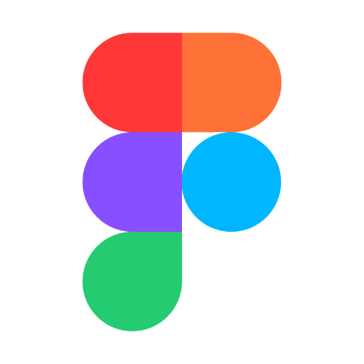
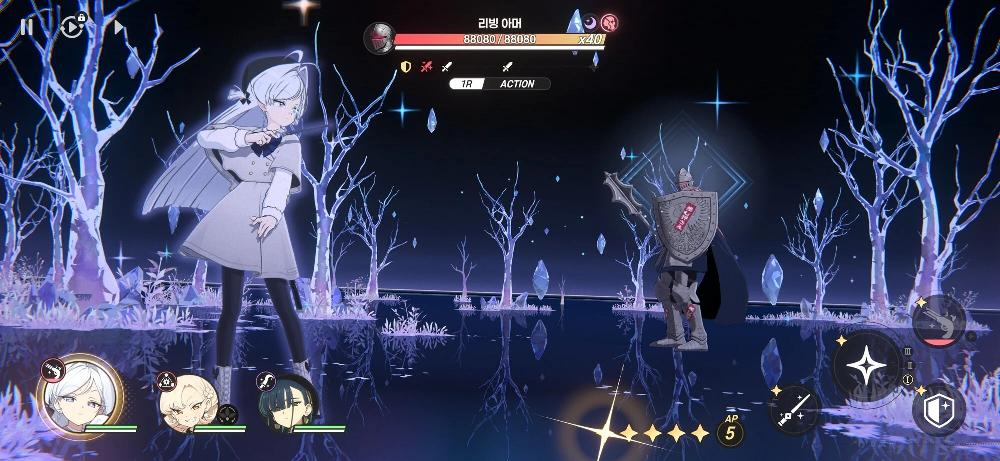
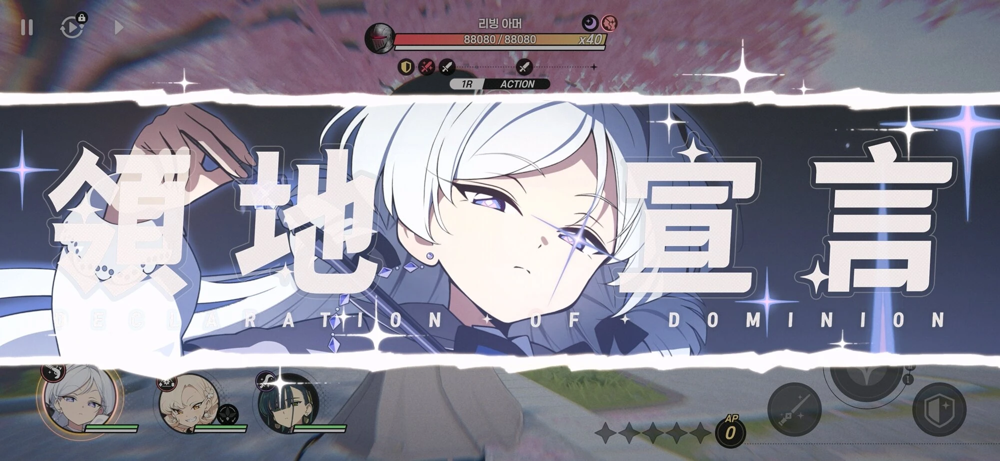
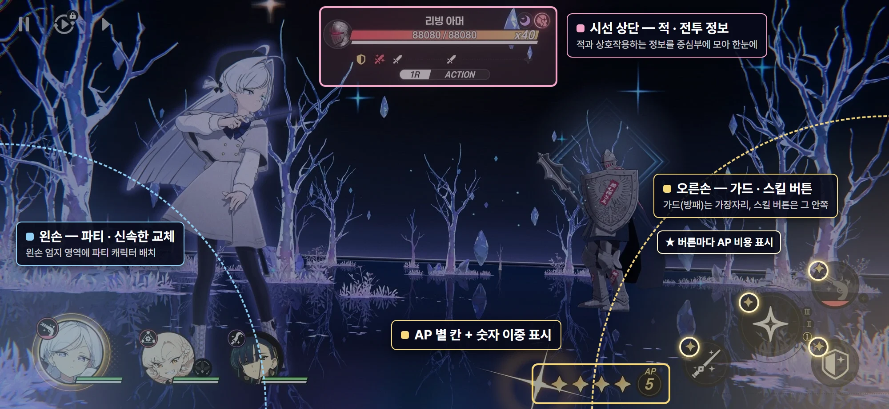
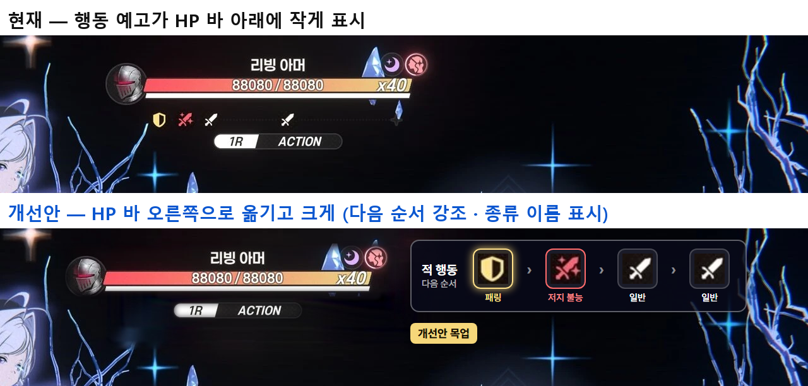
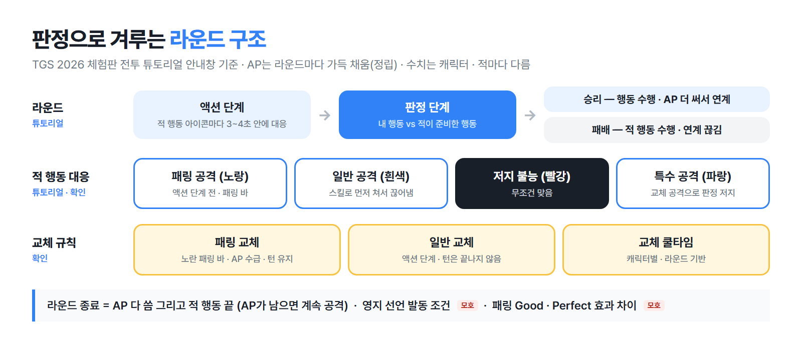

포트폴리오
2026. 10.
생각하고 정의하며설계에 임하는박세훈입니다.
01 / 38
프로필
2026
인적사항
- 박세훈 / 시스템/컨텐츠 기획자
- 생년월일 1993. 6. 1.
- 010-7222-0473
- sun8070vvv20@gmail.com
학력 · 병역
- 울산대학교 졸업 (2012.03–2020.02)
- 육군 만기전역 (2013.04–2015.01)
경력 · 4년 8개월 · 서비스 기획 PL · 사업 관리
- 이노디스 2025. 2. – 2026. 10. 31.(1년 9개월) / 웹서비스팀 기획 PL
- 그라비티 네오싸이언 2024. 1. – 11.(11개월) / 운영 기획 · 대리
- 이노컴즈 2021. 7. – 2023. 6.(2년) / 서비스 기획 · 주임
도구
 PowerPoint · Slides숙련도 상
PowerPoint · Slides숙련도 상 한글 · Word숙련도 상
한글 · Word숙련도 상 Slack숙련도 상
Slack숙련도 상 Excel · Sheets숙련도 중
Excel · Sheets숙련도 중
Figma숙련도 중 VS Code숙련도 중
VS Code숙련도 중 생성형 AI숙련도 중
생성형 AI숙련도 중
02 / 38
목차
2026
목차
03 / 38
소개
2026
소개
시스템 규칙과 데이터 구조를 이용자의 시각에서 설계하는 시스템/컨텐츠 기획자
04 / 38
소개
2026
웹과 앱, 그 너머까지
다양한 경험을 하고 싶은
기획자입니다
경력회사 3곳 · 경력 4년 8개월
이노컴즈서비스 기획 · 주임
2021. 7. – 2023. 6.(2년)
업무 시스템과 기관 홈페이지의 서비스 기획 실무
그라비티 네오싸이언운영 기획 · 대리
2024. 1. – 11.(11개월)
면세 이커머스 운영 기획 및 프로모션 이벤트 기획
이노디스웹서비스팀 기획 PL
2025. 2. – 2026. 10. 31.(1년 9개월)
문화·정책 포털의 유지보수 · 고도화 · 재구축
경험한 분야
문화·예술 포털
서울영화센터
청년 정책 · 재무상담
서울영테크
박물관 누리집
국립부여박물관
공연장 통합 홈페이지
화성시문화관광재단
면세 이커머스
신세계DF
출입증 · 전자결재 업무 시스템
이노컴즈
기관 홈페이지
이노컴즈
역량 4가지
시스템 규칙 · 데이터 구조
공개 자료와 튜토리얼 영상을 근거로 전투 규칙을 정리하고 데이터 표와 관계도를 작성
컨텐츠 UI/UX
휴대 기기 조작 영역과 적 행동 표시를 분석해 개선안과 목업을 작성
운영 규칙 · 예외 정의
이벤트 참여와 지급 규칙, 예외 처리를 양식으로 정의하고 운영 기획을 진행
AI 활용
하네스와 skill 적용, Git과 Vercel 배포, 로컬 파일 연결 대시보드 구성
소개 · 05 / 38
게임 분석
2026
게임 분석
공개된 화면으로 분석하는 아스트라에 오라티오, TGS 2026 체험판 전투 튜토리얼 영상 반영
06 / 38
게임 분석
2026
공개된 화면으로 분석하는
아스트라에 오라티오
공개 자료 정리와 전투 화면 분석에 TGS 2026(도쿄게임쇼) 체험판 전투 튜토리얼 영상을 반영했습니다. 영상으로 확인되지 않은 내용은 ‘모호’로 표기했습니다.
이 장에서 쓰는 게임 용어
- AP
- 한 라운드에 쓸 수 있는 행동 포인트
- 패링
- 적 공격 타이밍에 맞춰 막아 내는 방어
- 영지 선언
- 전장을 바꾸는 전용 기술과 전면 연출
- US포인트
- 얼티메이트(필살기)에 쓰는 별도 포인트
게임 분석 · 07 / 38
게임 분석 A · 개요
전투 화면과 영지 선언
- 근거
- TGS 2026 체험판 전투 튜토리얼 영상
- 분석 문서
- 작성일
- 2026. 9. 28.
대상
- 적 정보·행동 예고
- 파티 초상 3개
- AP
- 행동 입력
- 영지 선언 연출
결과
- 살펴본 것 5가지출격 인원, 연출 밀도, 아날로그 표현, 전장 전환, 발동 조건

게임 분석 · 08 / 38
게임 분석 A · 살펴본 것
전투 화면에서 확인한 5가지
01
- 출격 캐릭터는 1명전장에는 아군 1명과 적 1명만 섭니다. 편성 슬롯은 4칸이며, 대기 캐릭터는 교체 공격으로 들어와 파란 특수 공격을 저지합니다.
02
- 연출 밀도‘결정적 장면과 영지 선언에서 연출 밀도를 끌어올린다’는 개발진 설명이 화면 전체 연출로 구현됐습니다.
03
- 아날로그 표현찢어진 종이, 노이즈, 색 번짐이 공개 키워드 ‘서정적 아날로그’와 맞닿습니다.
04
- 전장 전환영상에서 영지 선언 뒤 전장이 벚꽃 거리에서 결정 숲으로 바뀌고, 몇 라운드 뒤 다시 거리로 돌아옵니다. 유지 기간과 전투 효과는 모호합니다.
05
- 발동 조건캡처는 AP 0이지만 영상에서는 AP 4 상태에서도 발동합니다. 전용 버튼으로 보이며 AP 0 조건은 아닙니다. 정확한 조건은 모호합니다.

게임 분석 · 09 / 38
게임 분석 B · 개요
휴대 기기에 맞춘 이용 경험
- 근거
- TGS 2026 체험판 전투 튜토리얼 영상
- 분석 문서
- 작성일
- 2026. 9. 28.
- 프로토타입
대상
- 화면 배치
- 행동 비용 표시
- 행동 예고
- 상태 표시
결과
- 손 위치에 맞춘 배치 4가지
- 상태 표시 3가지
- 개선 제안 1가지

사용 툴
- Claude버튼 액션 프로토타입
게임 분석 · 10 / 38
게임 분석 B · 화면 배치
손이 닿는 자리에 맞춘 화면 배치 4가지
시선 상단
적 및 전투 관련 정보를 한눈에 알 수 있도록, 적과 상호작용하는 정보를 중심부에 모아 둡니다.
왼손
신속한 교체가 가능하도록 왼손 엄지 영역에 파티 캐릭터를 배치했습니다. 파란 특수 공격은 여기서 교체 공격으로 저지합니다.
오른손
대다수가 오른손잡이이므로 패링 바에 즉각 대응해야 하는 가드(방패) 버튼을 가장자리에 배치했습니다. 스킬 버튼은 그 안쪽에 배치했습니다. 패링 공격은 적 아이콘과 가드 버튼에 노란색으로 표시됩니다.
버튼마다 별 아이콘
스킬마다 다른 AP 비용을 버튼 위에서 바로 읽히도록 표시합니다. 비용은 캐릭터마다 다릅니다.
게임 분석 · 11 / 38
게임 분석 B · 상태 표시와 개선 제안
상태 표시 3가지와 개선 제안 1가지
01
- AP를 별 칸과 숫자로 이중 표시남은 행동 수를 한눈에 세고, 숫자로 다시 확인합니다.
02
- 행동 예고 타임라인적 행동을 색으로 구분하고 아이콘마다 3~4초 안에 대응합니다. 노란 패링 공격은 액션 단계 전에 먼저 들어옵니다.
03
- 상태를 화면에 남김자동 전투는 자물쇠로 잠김을 알리고, 전면 연출 중에도 화면 정보 표시를 흐리게 유지합니다.
개선 제안: 적 행동 예고 확대지금 화면과 개선안 비교 (개인 의견 · 목업)
문제
- 지금은 HP 바 아래에 작게 표시되어 적응하기까지 불편할 가능성이 큽니다.
해결
- HP 바 오른쪽으로 옮겨 크게 표시하고, 지금 대응할 행동 강조, 남은 시간, 종류 이름을 붙입니다.
프로토타입에는 누를 수 있는 버튼과 지금 누르면 좋은 버튼을 금빛 강조로 구분했습니다. 마우스를 올리면 역할을 알려 주는 안내도 붙였습니다. 영상 공개 전 추정 규칙으로 만들어 판정 구조는 반영되지 않았습니다.

게임 분석 · 12 / 38
게임 분석 C · 개요
판정으로 겨루는 라운드 구조
- 근거
- TGS 2026 체험판 전투 튜토리얼 영상
- 분석 문서
- 작성일
- 2026. 9. 28.
대상
- 튜토리얼 안내창 근거
- 액션 → 판정
- 적 행동 대응
- 교체 규칙
- 기기에 저장되는 데이터
결과
- 라운드 구조
- 적 행동 4색 대응
- AP·교체 규칙
- 기기와 서버의 데이터 나누기

게임 분석 · 13 / 38
게임 분석 C · 라운드 구조
한 라운드는 액션 → 판정
- 먼저패링 공격
- 액션 단계3~4초 대응
- 판정성공 여부 결정
01
한 라운드 = 액션 → 판정
액션 단계 전에 노란 패링 공격이 먼저 들어옵니다. 액션 단계에서는 적 행동 아이콘마다 3~4초 안에 대응합니다. 판정 단계에서 성공 여부가 결정됩니다.
02
판정 승패와 라운드 종료
이기면 행동이 수행되고 AP를 더 써서 공격을 이어 갑니다. 지면 적 행동이 수행되고 연계가 끊깁니다. 라운드는 AP를 다 썼고 적이 행동을 마쳤을 때 끝나며, 피격돼도 AP가 남으면 턴이 유지됩니다.
게임 분석 · 14 / 38
게임 분석 C · 적 행동 대응
색으로 구분되는 적 행동 4가지와 대응
흰색 아이콘
일반 공격
스킬로 먼저 쳐서 끊어냄
노랑 아이콘
패링 공격
패링 바에 맞춰 가드
빨강 아이콘
저지 불능
무조건 맞음
파랑 아이콘
특수 공격
교체 공격으로 판정 저지
적 행동 아이콘마다 3~4초 안에 대응합니다. 색 이름을 함께 적어 색만으로 구분하지 않게 했습니다.
게임 분석 · 15 / 38
게임 분석 C · 포인트와 교체 규칙
AP · US포인트와 교체 규칙
01
- AP와 US포인트AP는 라운드마다 가득 채워지고 최대치는 출전 캐릭터마다, 소모량은 스킬마다 다릅니다. 얼티메이트는 US포인트로 쓰며, US포인트는 AP와 별개로 행동한 턴 횟수만큼 차는 전용 대기 시간입니다.
02
- 교체 규칙파란 특수 공격은 교체 공격으로 저지합니다. 노란 패링 바가 나타날 때 대기 캐릭터로 교체하며 받아치면 AP를 얻고 턴을 이어 갑니다. 교체해도 턴은 끝나지 않으며, 캐릭터별로 라운드 단위 교체 대기 시간이 있습니다.
게임 분석 · 16 / 38
게임 분석 C · 데이터 나누기
기기와 서버가 맡을 데이터 나누기
기기에 저장
편의 정보
설정 · 튜토리얼 진행 · 전투 이어하기
서버 기준으로 관리
서버 기준 정보
재화 · 보상 · 판정 결과
01
기기에는 편의 정보만 저장
설정과 튜토리얼 진행, 전투 이어하기는 기기에 두고, 재화와 보상, 판정 결과는 서버 기준으로 관리합니다.
02
데이터 표 · 관계도
공고의 ‘메타 시스템 및 데이터 구조 설계’에 맞춰 캐릭터, 스킬, 적, 적 행동 패턴, 판정 규칙 표 예시와 관계도를 작성했습니다.
규칙은 TGS 2026 체험판 튜토리얼 안내창 캡처(분석 문서 TU01 장)를 근거로 작성했습니다. 교체 규칙과 대응 시간은 실제 플레이로 확인했습니다. 기기 저장 데이터는 기획 제안입니다.
게임 분석 · 17 / 38
게임 분석 D · 개요
메타 시스템과 데이터 구조
- 근거
- 공개된 기사 · 공식 자료
- 분석 문서
- 작성일
- 2026. 9. 28.
지금까지 공개된 것
- 게임 사이클CBT는 전투, 스토리, 특구청 관리·행정을 오가는 기본 사이클로 구성
- 서비스 형태완결작보다 이야기가 계속 이어지는 ‘연재물’에 가까운 라이브 서비스
- 장르 포지션‘수집형 RPG’에서 ‘신전기 서브컬처 RPG’로 표기 변경, 세계관을 전면에
- 캐릭터 규모CBT 18종, 출시 시 30여 명, 플레이어블 소속 그룹 약 10개
- CBT 콘텐츠메인 스토리 3종, 미니 스토리 2종, 레이드, 전투·교류 콘텐츠
- 미공개 영역성장·수집·경제 구조, 호감도, 관계성 시스템
게임 분석 · 18 / 38
게임 분석 D · 규칙을 데이터로
시스템 규칙을 데이터로 나누면
01
- 캐릭터역할군 · 속성 · AP 최대치 · 교체 쿨타임 · 영지 선언, 캐릭터마다 다름
02
- 스킬종류 (일반·전투·얼티메이트·가드) · 스킬별 AP 소모량 · 얼티메이트용 US포인트
03
- 적행동 예고 종류 (일반 · 패링 · 저지 불능 · 특수) · 약점 · 브레이크 수치, 적마다 다름
04
- 전투 공통라운드 (액션 → 판정) · 적 행동별 대응 시점 · 판정 승패 규칙 · 교체 3종
데이터 표 예시: 이름과 수치는 이해를 돕기 위한 예시값이며, 적 HP와 브레이크 수치 일부는 영상 화면의 값을 사용했습니다. 수치는 캐릭터와 적마다 다릅니다.
게임 분석 · 19 / 38
게임 분석 D · 데이터 관계도
데이터 관계도
관계
- 캐릭터 1 : N 스킬
- 캐릭터 1 : 1 영지 선언
- 편성 N : M 캐릭터 (슬롯)
- 스테이지 1 : N 적
- 적 1 : N 적 행동 패턴
- 적 행동 패턴 N : 1 행동 종류 · 판정 규칙
규칙
- 전투 = 스테이지 + 편성
- 판정: 행동 종류마다 이길 수 있는 입력 (스킬 · 가드 · 교체)
기획 제안으로 간략화한 관계도입니다. 편성의 오른쪽 3칸은 용도를 모호로 표기했습니다.
게임 분석 · 20 / 38
게임 분석 D · 컨텐츠 UI/UX와 최신 트렌드
화면 · 연출의 방향과 트렌드 속 선택
컨텐츠 UI/UX (공개 자료)
- 아트 키워드‘서정적 아날로그’. 기억 속 아날로그에 대한 노스탤지어를 현재 트렌드로 재현
- 행정 소재지도, 정장, 서류, ID카드, 도장, 명패로 행정 분위기 표현
- 연출 방식스탠딩 일러스트, 컷인, 음성 중심. 평소에는 담담하게, 결정적 장면과 영지 선언에서 연출 밀도를 올림
- 플랫폼스마트폰 우선 설계, CBT는 PC 미지원
- 현지화텍스트 한국어·일본어·중국어 번체·영어, 음성 일본어
최신 게임 트렌드 (공개 자료)
- 장르 선택 배경최근 10년 서브컬처에서 이세계·포스트아포칼립스가 반복되는 가운데 과거 장르와 미학에 다시 주목
- 전투 방향턴제의 전략성과 실시간의 긴장감을 함께 전달
- 출시 전략글로벌 동시 출시, 1990~2000년대 신전기 작품을 즐긴 문화권까지 대상
게임 분석 · 21 / 38
산출물
직접 작성한 분석 문서 20쪽
분석 문서이며, 해당 게임의 실제 설계 문서가 아닙니다.
전투 화면 · 시스템 기획
전투 기본 화면 · 영지 선언 연출 / 튜토리얼 근거 · 시스템 규칙 · 진행 흐름
메타 시스템 · 기획 문서
공개된 메타 시스템과 전투 데이터 구조 / 전투 흐름도
데이터 문서 · 관리 문서
데이터 관계도 / 제·개정 이력과 모듈 약칭
전 쪽 펼침 · 22-1 ~ 22-2쪽
게임 분석 · 22 / 38
산출물 · 협업
2026
산출물 · 협업
작성해 온 문서 세 갈래, 다른 파트와 소통한 방식, 작업 순서마다 AI 활용
23 / 38
산출물 · 문서
작성해 온 문서를 기획 · 데이터 · 관리 세 갈래로
기획 문서
- 요구사항정의서
- 정책 문서
데이터 문서
- 시스템 연결 기획서
- 통계 화면 정의
관리 문서
- 일정표 · 일정 관리
- 유지보수 보고서
- 기안 · 계약 문서
산출물 · 협업 · 24 / 38
산출물 · 협업
다른 파트와 소통한 방식
기획 산출물은 디자이너와 프로그래머에게 전달되어야 완성됩니다. 파트마다 필요한 정보와 착수 시점이 달라 산출물이 나오는 순서를 맞췄습니다. 주간 현황판으로 서로의 진행 상황을 공유하며 소통했습니다.
디자이너 · 퍼블리셔
화면을 실제로 보이게 만드는 사람
고객이 시각적으로 확인할 때 가장 납득이 빠른 산출물입니다. 상황에 따라 기획서보다 먼저 컨셉 시안을 요청해, 고객 협의와 기획을 동시에 진행했습니다.
프로그래머 · 개발
규칙을 동작으로 만드는 사람
상대적으로 고객이 체감하기 어렵지만 정교함과 잦은 테스트가 필요한 작업입니다. 착수는 빠르게 하되 마감 기한은 여유 있게 조정해 달라고 요청했습니다.
협업 순서
- 1
주간 계획 공유
- 2
파트별 요청 · 전달
- 3
진행 상황 확인
- 4
검수 · 피드백
산출물 · 협업 · 25 / 38
산출물 · AI 활용
작업 순서마다 AI 활용
작업 순서
- 1
계획
- 2
계획 검수
페르소나 배정
- 3
구현
- 4
구현 검증
활용 범위
- 01AI 도구 연결
- 02개인 작업 도구 생성
- 03반복 작업의 자동화
- 04폴더 관리
- 05데이터 분석
- 06보고자료 정리
산출물 · 협업 · 26 / 38
유관 프로젝트
2026
유관 프로젝트
유관 업계 프로젝트 5건을 규칙과 데이터 설계 관점으로 정리
27 / 38
유관 프로젝트
유관 업계 프로젝트 5건을 규칙과 데이터 설계 관점으로 정리했습니다.
| 프로젝트 | 유형 | 작업 내용 | 규칙 · 데이터 설계 | 시기 |
|---|---|---|---|---|
| 01. 서울영화센터 포털예술 포털 | 구축유지보수 | 회원, 대관, 교육 신청 시스템 구축 · 쿠폰 관리 화면 · 관람 통계 3종 | 쿠폰 규칙을 관리 화면 설정으로 전환 · 입금 상태 2단계 분리 | 2025. 3. – 2026. 10. 31. |
| 02. 서울영테크 청년 재무상담 포털청년 정책 포털 | 재구축 | 상담 신청 · 배정 시스템 재구축 · 유형 분류 · 그룹 강의 | 신청 유형 5개 · 상담 상태 4단계 정의 | 2025. 4. – 2026. 10. 31. |
| 03. 국립부여박물관 누리집박물관 누리집 | 유지보수 | 키오스크 발권현황 API 연결 · 실시간 관람 현황 | 연결 대상 확정 전 필요 데이터 · 저장 구조 정의 | 2025. 5. – 2026. 10. 31. |
| 04. 화성시문화관광재단 공연장 통합 홈페이지공연장 통합 홈페이지 | 구축 | 공연장 5개소 통합 홈페이지 · 대관 신청 · 관리 | 승인 · 반려 · 취소 기준으로 신청 상태 정의 | 2025. – 2026. 10. 31. |
| 05. 신세계DF 면세 이커머스면세몰 | 운영 | 프로모션 기획과 운영 · 참여 조건과 쿠폰, 포인트 지급 규칙 정의 | 참여 · 회차 · 당첨 · 지급 규칙과 예외 정의 | 2024. 1. – 11. |
유관 프로젝트 · 28 / 38
유관 프로젝트 01 · 예술 포털
서울영화센터 포털
- 규모
- 연 8,000만 원
대관·교육·메인·예매 4개 영역 - 기간
- 2025. 3. – 2026. 10. 31.
(1년 8개월)
담당 파트
- 기획100%
- 구현퍼블리싱100%
- 구현디자인100%
- 구현개발100%
- 고객사 CS100%
문제
- 회원가입 기능 없음
- 대관 · 교육 등 신청 시스템 전무
- 구축 후 쿠폰 변경마다 개발 작업 · 예매처 데이터 불일치
해결
- SNS 로그인(네이버 · 카카오) · 자체 회원가입 구축
- 대관 · 교육 등 신청 시스템 구축
- 대관 입금 상태를 예약금 · 잔금 2단계로 분리, 3개 안 비교 뒤 확정
- 유지보수로 쿠폰 관리 화면 · 30분 자동 반영 추가
결과
- 회원 시스템, 대관 · 공유오피스 · 교육 신청 시스템
- 유지보수: 쿠폰 관리 · 관람 통계 3종 · 기획전 패스
성과
+50%
포털 유입 인원2025년 대비 · 통계 · 기획전 효과 포함
5영업일→당일
쿠폰 혜택 반영 시간개편 전후 비교 평균
30건→6건
쿠폰 불일치 문의적용 후 3개월 평균 · 월

사용 툴
- PowerPoint문서
- Excel문서
- 한글문서
- ClaudeAI · skill
- VS CodeAI 코딩
- Figma디자인 · 시안
서울영화센터 · 29 / 38
유관 프로젝트 01 · 바꾸기 전과 후
쿠폰 발급을 운영자 손으로
문제
바꾸기 전 · 프로그램에 고정된 발급
쿠폰 하나 바꾸는 데 개발자가 필요했습니다
- 쿠폰 발급 규칙이 프로그램에 고정되어 있음
- 혜택을 바꾸려면 개발 반영을 기다려야 함
- 운영자가 직접 손댈 수 있는 화면 없음
- 외부 예매처 쿠폰과 내부 데이터가 어긋남
해결
바꾼 뒤 · 관리 화면
운영자가 직접 쿠폰 상품을 구성합니다
- 관리 화면에서 발급 규칙을 설정
- 개발 반영 없이 이벤트 혜택을 즉시 변경
- 쿠폰 상품을 직접 구성하도록 기획
- 외부 예매 쿠폰 자동 반영 설계로 데이터 일치
서울영화센터 · 30 / 38
유관 프로젝트 02 · 청년 정책 포털
서울영테크 청년 재무상담 포털
- 규모
- 연 1억 원
- 기간
- 2025. 4. – 2026. 10. 31.
(1년 7개월)
담당 파트
- 기획100%
- 구현퍼블리싱100%
- 구현디자인100%
- 구현개발100%
- 고객사 CS100%
문제
- 상담 신청 · 배정이 시스템화되어 있지 않아 상담사가 직접 분류
- 그룹 강의 모집을 엑셀로 수기 관리
해결
- 상담 신청 · 배정 시스템 재구축, 신청할 때 유형 자동 분류
- 실제 신청 6개월분을 분석해 유형 5개 정의
- 그룹 강의 모집 · 출석을 관리 화면으로 전환
결과
- 상담 신청 · 배정 시스템(유형 5개 · 상태 4단계)
- 그룹 강의 모집 · 출석 관리 화면
성과
3일→1일
상담 배정 시간운영 6개월 기준 평균
4회→8회
그룹 강의운영 6개월 기준 · 월
62%→78%
참석률운영 6개월 기준

사용 툴
- PowerPoint문서
- Excel문서
- 한글문서
- Figma디자인
서울영테크 · 31 / 38
유관 프로젝트 03 · 박물관 누리집
국립부여박물관 누리집
- 규모
- 5,000만 원
고도화 2건 2,000만 원 - 기간
- 2025. 5. – 2026. 10. 31.
(1년 6개월)
담당 파트
- 기획100%
- 구현퍼블리싱100%
- 구현디자인100%
- 구현개발100%
- 고객사 CS100%
문제
- 운영 중인 누리집에서 발권 현황을 볼 수 없음
- 3자 일정 · 창구가 달라 연결 지연 예상 6주
해결
- 운영 중인 누리집에 키오스크 발권 현황 연결
- 연결 대상 확정 전에 필요 데이터 · 저장 구조 먼저 정의
- 우리 쪽 마감 먼저 통보, 기존 데이터로 화면 먼저 제작
- AI 도구로 키오스크 연결과 콘텐츠 페이지 수정 진행
결과
- 키오스크 발권 현황 연결 · 실시간 관람 현황 화면
- 고도화 2건 추가 계약
성과
15건→4건
주말 현장 발권 문의개편 전후 주말 3개월 · 주
60%→80%
주말 매진율같은 기준 · 온라인 예매 증가
6주→0일
연결 일정 지연예상 → 실제

사용 툴
- PowerPoint문서
- Excel문서
- 한글문서
- ClaudeAI · skill
- VS CodeAI 코딩
- Figma디자인 · 시안
국립부여박물관 · 32 / 38
유관 프로젝트 03 · 내가 맡은 일과 외부 3사
외부 3사 일정과 별개로 내부 일정을 먼저
내가 맡은 일
- 1
요구사항 접수
고객사 · 협력사
- 2
일정표 수립
일정 통보
- 3
진행 관리
기획자 업무 배분
- 4
검수 · 정산
고도화 제안
외부 3사
- 1
박물관
요구 정리
- 2
키오스크사
일정
- 3
예매사
연결 확인
- 4
연결 완료
국립부여박물관 · 33 / 38
유관 프로젝트 04 · 공연장 통합 홈페이지
화성시문화관광재단 공연장 통합 홈페이지
- 규모
- 공연장 5개소
사용자 26 · 관리자 56페이지 - 기간
- 2025. – 2026. 10. 31.
담당 파트
- 기획100%
- 구현퍼블리싱100%
- 구현디자인100%
- 구현개발100%
- 고객사 CS100%
문제
- 공연장 5개소를 묶는 통합 홈페이지 없음
- 조례 · 대관 규정 · 내규를 화면 기준으로 옮겨야 함
해결
- 공연장 5개소 통합 홈페이지 신규 구축
- 승인 · 반려 · 취소 기준으로 신청 상태 먼저 정의
- 반복되는 목록 기능을 가이드 1장으로 묶음
결과
- 통합 홈페이지 1차 오픈(2025. 12.)
- 신청 상태 7개 · 상위 메뉴 9개 · 공통 기능 가이드 1장
사용 툴
- PowerPoint문서
- Excel문서
- 한글문서
- ClaudeAI · skill
- Figma디자인
화성시문화관광재단 · 34 / 38
산출물
화성시문화관광재단 대관: 규정을 화면으로 옮기기 전에 신청 상태와 메뉴 구조부터 정의했습니다.
화면정의서 20쪽
관리자 메뉴 구조와 공통 기능 가이드, 공연 · 시설대관 · 신청자 화면을 설계
플로우차트 1장
승인 · 반려 · 취소 세 지점 기준으로 예약 상태 5개와 확정 상태 2개를 정의
전 쪽 펼침 · 35-1 ~ 35-3쪽
화성시문화관광재단 · 35 / 38


유관 프로젝트 05 · 면세몰
신세계DF 면세 이커머스
- 기간
- 2024. 1. – 11.
(11개월)
담당 파트
- 기획100%
- 구현퍼블리싱100%
- 구현디자인100%
- 구현개발100%
- 고객사 CS100%
문제
- 운영 중인 이벤트마다 참여 조건을 문서 없이 구두 협의
- 기획 착수부터 오픈까지 2주
해결
- 참여 · 회차 · 당첨 · 지급 운영 규칙을 양식으로 정리
- 중복 지급 · 기간 만료 예외를 화면보다 먼저 정의
- 상품 노출부터 주문·결제까지 구매 흐름을 점검해 개선안을 정리
결과
- 이벤트 정책 정의 양식
- 프로모션 24건
성과
5건→0건
중복 지급 오류양식 적용 후 7개월 · 월
2주→1주
이벤트 준비 기간협의 단계 단축

사용 툴
- PowerPoint문서
- Excel문서
- 한글문서
- Figma디자인
신세계DF · 36 / 38
산출물
신세계DF: 예외 상황까지 양식 하나에 정의해 구두 협의 단계를 줄였습니다.
이벤트 정책 정의 양식 4개 항목
이벤트마다 정할 내용과 예외 처리를 한 장에 정의
| 정책 항목 | 정할 내용 | 예외 처리 |
|---|---|---|
| 참여 조건 | 참여 대상 · 기간 · 경로 | 기간 밖 접근 시 안내 화면 |
| 회차 제한 | 1인당 참여 횟수 · 회차 기준 | 제한을 넘으면 참여 버튼 비활성 |
| 당첨 판정 | 판정 시점 · 기준 · 결과 노출 | 동일인 중복 당첨 제외 |
| 쿠폰 · 포인트 지급 | 지급 시점 · 수량 · 유효 기간 | 중복 지급 차단 · 기간 만료 시 소멸 |
신세계DF · 37 / 38